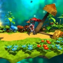
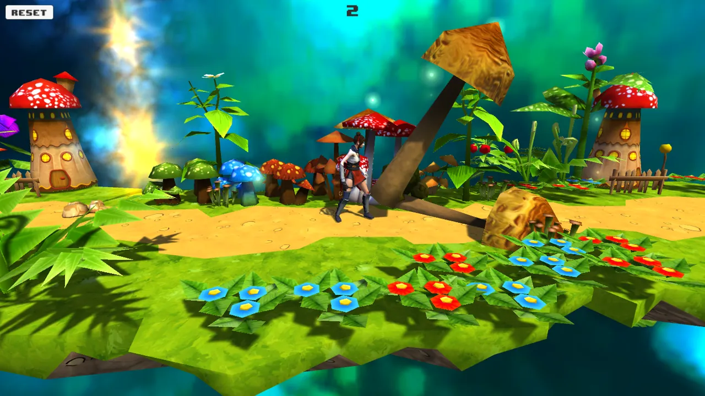

Nia in Mushroom World
Nia is finding her way home. Her magic seeds grow into big mushrooms that stop anyone in her way.

(open full size)Screenshots


How to play
Nia wants to go home, but some nasty creatures block her way. She throws magic seeds, and the seeds grow into powerful mushrooms that knock the creatures out. Do not touch them, or the game ends.
- Arrow keys move Nia.
- Left Ctrl throws a seed.
- Space jumps.
Made for Ludum Dare
Ludum Dare is an online event where people make a game from scratch in one weekend. Nia in Mushroom World was made for Ludum Dare 34, in December 2015.